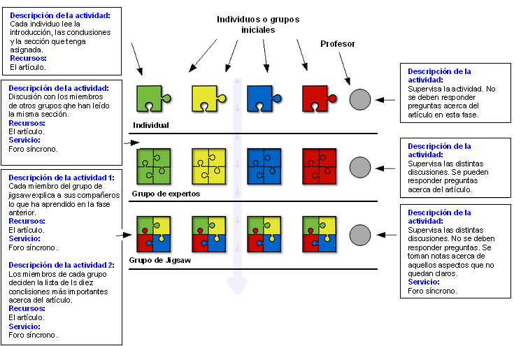

Diseño de Aprendizaje basado en el CLFP Jigsaw:
Comprendiendo el the Artículo “X”
Entender de forma colaborativa ún artículo donde cada
subsección (sin contar el resumen y la introducción) se
asigna a un miembro de cada Grupo
Jigsaw. El escenario es de tipo presencial, en el que cada
persona dispone de un ordenador.

Objetivos
- Aprender acerca de los conceptos expuestos en el artículo.
- Acostumbrarse a leer artíiculos.
- Desarrollar la habilidad de trabajar en grupos.
Prerrequisitos
- Tener conocimientos previos acerca del tema tratado en el
artículo.